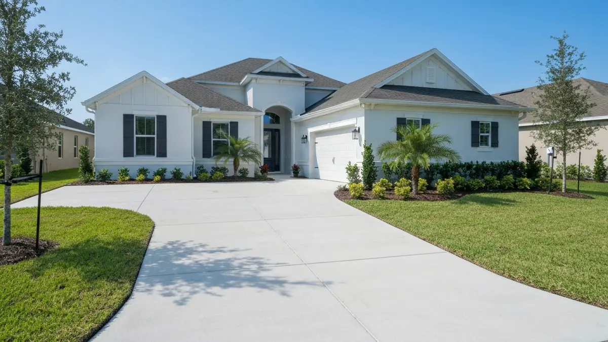

Wesley Chapel's impressive transformation into Pasco County's premier boom town means an abundance of stunning, expansive luxury homes. These residences are characterized by generous lot sizes that naturally call for more than just basic hardscapes. Owners here desire extensive concrete driveways that provide grand curb appeal, spacious patios ideal for entertaining in the Florida sunshine, and resilient pool decks to complement their resort-style backyards. The subtropical climate, with its intense sun and heavy rain, demands durable, expertly installed concrete that can withstand the elements and heavy usage. From the desire for a sophisticated outdoor living space to ensuring long-lasting structural integrity for multi-car garages and wide entryways, Wesley Chapel homeowners uniquely rely on superior concrete solutions that blend aesthetics with enduring strength.
Tampa Concrete Pros brings unparalleled local expertise directly to Wesley Chapel residents. Our team is intimately familiar with the unique characteristics of this vibrant community, from the sandy soil conditions prevalent across Pasco County to navigating the specific permitting requirements of the county. We understand the architectural styles and high standards expected in communities like Wiregrass Ranch, Estancia, and Seven Oaks, ensuring our designs and installations seamlessly integrate with your property's existing aesthetic. Our deep understanding of Wesley Chapel means we can anticipate challenges and deliver solutions that are not just beautiful, but also robust and compliant with local regulations, earning us a trusted reputation among your neighbors.
Our service advantages are specifically tailored to meet the demands of Wesley Chapel's luxury market. We utilize premium, high-strength concrete mixes designed to endure Florida's intense heat and humidity, ensuring your driveways, patios, and pool decks resist cracking, fading, and deterioration. For multi-car driveways and expansive pool decks common in Wesley Chapel, we offer advanced reinforcement techniques and custom decorative finishes that elevate your property's value and visual appeal. Our commitment to meticulous craftsmanship, combined with efficient project management, means your large-scale concrete project is completed on time, within budget, and to the highest standards of quality, minimizing disruption to your upscale lifestyle.
Wesley Chapel is a dynamic, rapidly expanding community situated in the northeastern part of the Tampa Bay area, primarily within Pasco County. Our services extend throughout the entirety of Wesley Chapel, from the master-planned communities along the State Road 54 and State Road 56 corridors, such as Wiregrass Ranch, Estancia at Wiregrass, and Seven Oaks, to newer developments like WaterGrass and Union Park. We are also proud to serve residents near major landmarks like The Shops at Wiregrass, AdventHealth Center Ice, and the prestigious Saddlebrook Resort. Our familiarity with key arteries like I-75 and Bruce B. Downs Boulevard ensures prompt service across all of Wesley Chapel, solidifying our commitment to this booming area and its surrounding neighborhoods.
Due to the prevalence of larger homes and more extensive projects in Wesley Chapel, concrete costs can vary significantly based on square footage, decorative finishes, and site preparation. While basic concrete can start lower, many Wesley Chapel projects, opting for stamped, colored, or custom designs over larger areas, often range higher than average. We provide detailed, transparent quotes tailored to your specific luxury property needs.
For a typical Wesley Chapel luxury home with extensive concrete work, projects can range from a few days to a couple of weeks. This timeframe accounts for meticulous site preparation, which is crucial for stability, pouring, proper curing time for strength, and any decorative finishing. Larger driveways or complex pool deck designs will naturally require more time.
Yes, Tampa Concrete Pros proudly serves all neighborhoods and communities within Wesley Chapel. Whether you reside in the expansive Wiregrass Ranch area, the elegant Estancia community, Seven Oaks, Meadow Pointe, or the growing developments along SR 56, our team is equipped to provide top-tier concrete services right to your doorstep.
Many of Wesley Chapel's premier communities, such as Estancia, Wiregrass Ranch, and WaterGrass, have specific Homeowners Association (HOA) guidelines regarding exterior modifications, including concrete driveways, patios, and pool decks. These guidelines often cover approved colors, materials, patterns, and design aesthetics. Tampa Concrete Pros is experienced in navigating these requirements and can help ensure your project meets all necessary HOA approvals before work begins.
Ready to schedule your concrete driveways, patios, and pool decks service in Wesley Chapel? Call us today or use the contact form above — we serve Wesley Chapel and all surrounding areas of Tampa, FL. Most Wesley Chapel jobs are scheduled within 48-72 hours.
We're your local concrete experts serving Wesley Chapel and all surrounding areas.
📞 Call (813) 705-9021